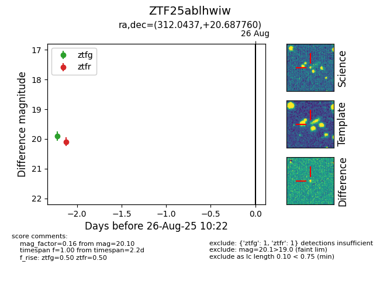

Target ZTF25ablhwiw at 2025-08-26 10:22, see:
FINK: fink-portal.org/ZTF25ablhwiw
Lasair: lasair-ztf.lsst.ac.uk/objects/ZTF25ablhwiw
ALeRCE: alerce.online/object/ZTF25ablhwiw
alt names
ZTF25ablhwiw (ztf,fink)
coordinates:
equatorial (ra, dec) = (312.0437,+20.68776)
galactic (l, b) = (65.5359,-14.17623)
photometry
last ztfg=19.91, ztfr=20.10
1 ztfg, 1 ztfr detections
